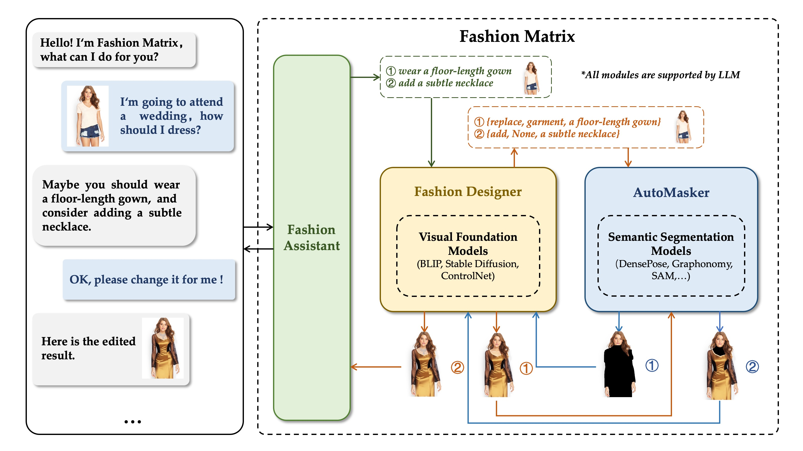
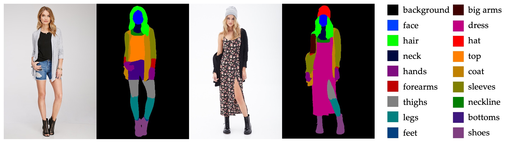
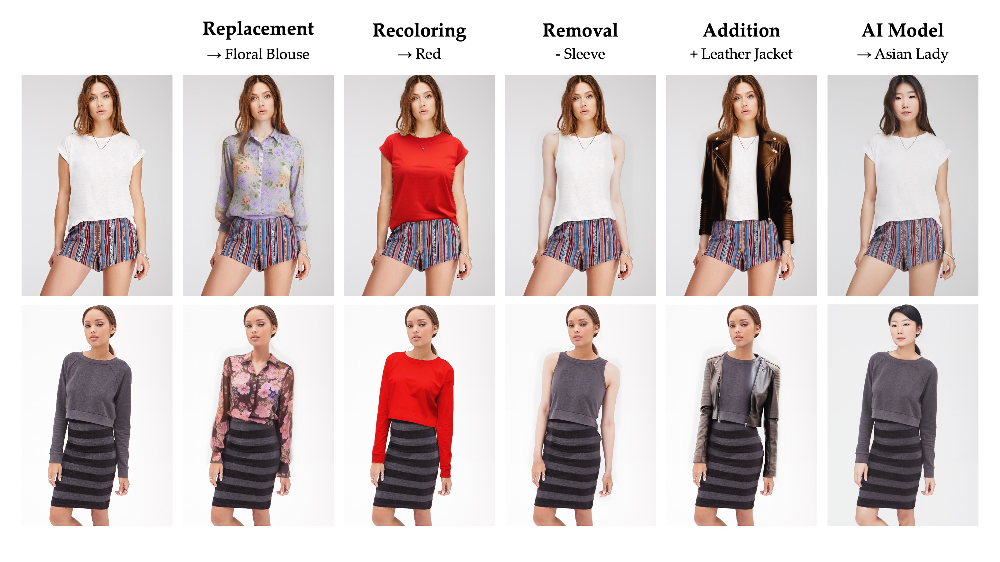
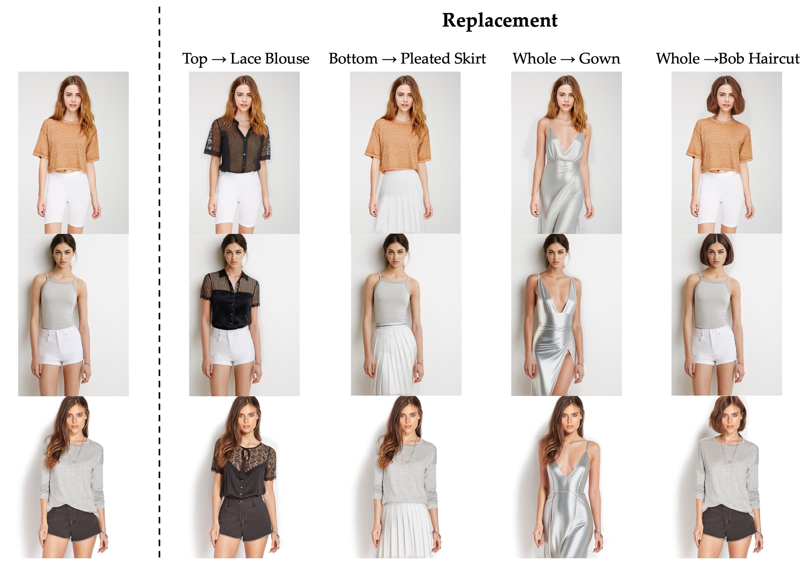
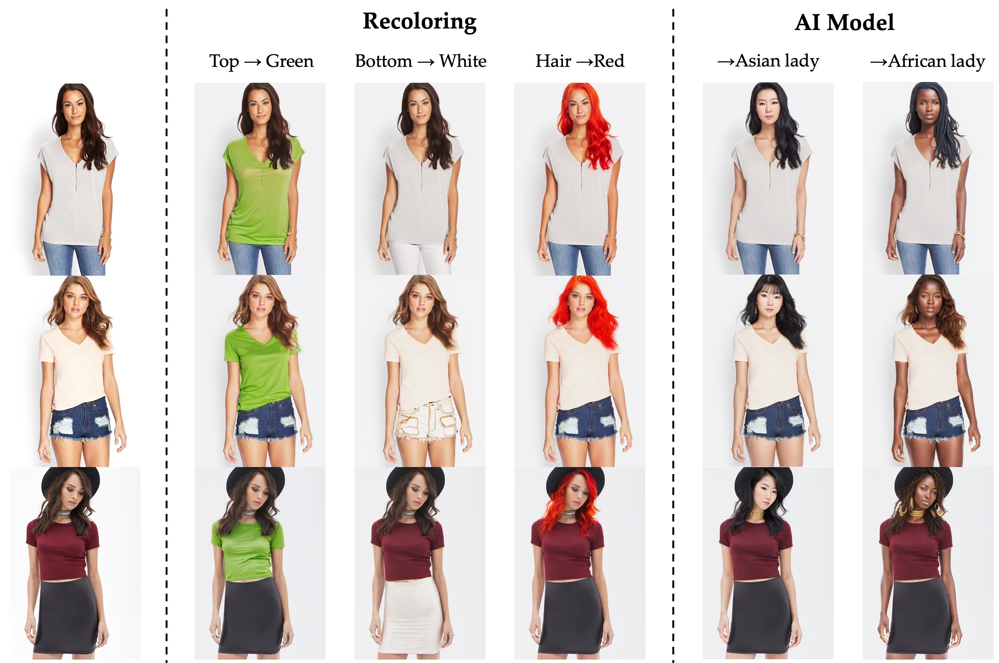
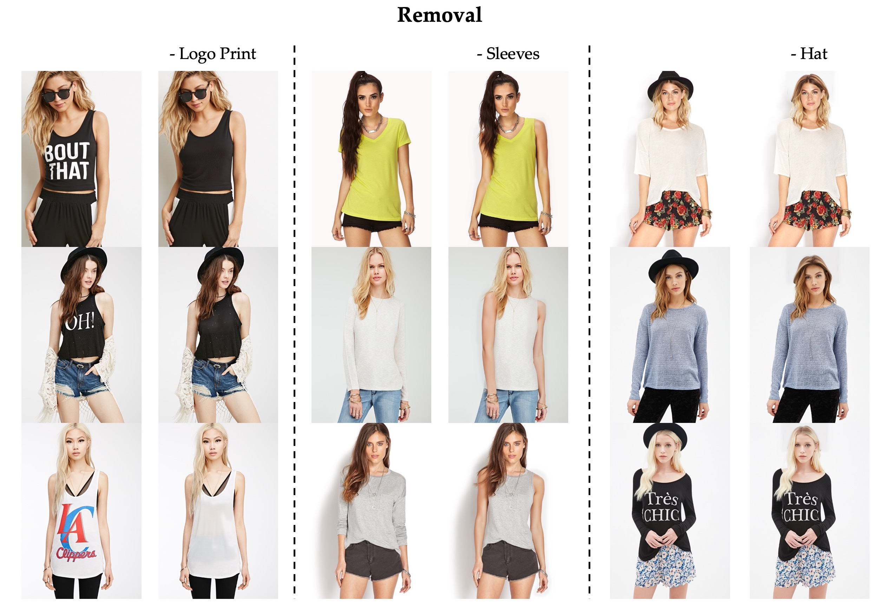
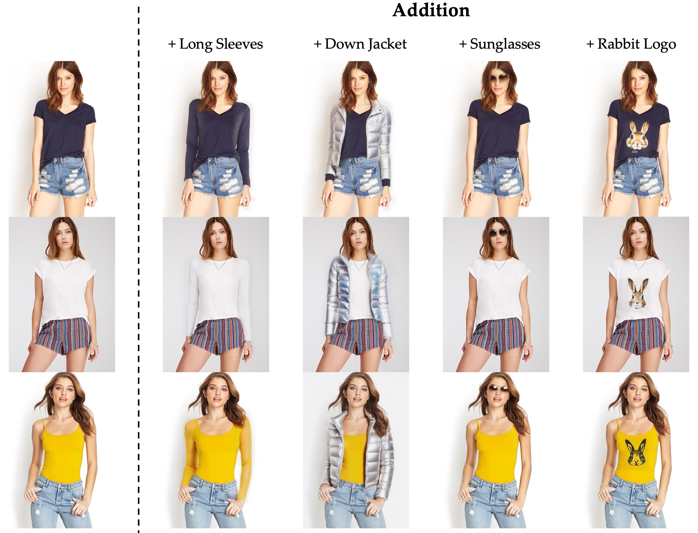

The utilization of Large Language Models (LLMs) for the construction of AI systems has garnered significant attention across diverse fields. The extension of LLMs to the domain of fashion holds substantial commercial potential but also inherent challenges due to the intricate semantic interactions in fashion-related generation. To address this issue, we developed a hierarchical AI system called Fashion Matrix dedicated to editing photos by just talking. This system facilitates diverse prompt-driven tasks, encompassing garment or accessory replacement, recoloring, addition, and removal.
Specifically, Fashion Matrix employs LLM as its foundational support and engages in iterative interactions with users. It employs a range of Semantic Segmentation Models (e.g., Grounded-SAM, MattingAnything, etc.) to delineate the specific editing masks based on user instructions. Subsequently, Visual Foundation Models (e.g., Stable Diffusion, ControlNet, etc.) are leveraged to generate edited images from text prompts and masks, thereby facilitating the automation of fashion editing processes.
Experiments demonstrate the outstanding ability of Fashion Matrix to explores the collaborative potential of functionally diverse pre-trained models in the domain of fashion editing
The system is composed of three modules: (1) Fashion Assistant , (2) Fashion Designer, and (3) AutoMasker, which are at different levels, and all of them use LLM as the support of intelligent text processing. Fashion Assistant engages in user interactions to collect requirements, which are subsequently examined and transformed into instructions by Fashion Designer. AutoMasker identifies the editing region based on the semantic context of the instructions. Hierarchical design simplifies the logical processing flow and facilitates efficient information processing.
AutoMasker combines human semantic segmentation with pose estimation to obtain a more fine-grained semantic segmentation map - CoSegmentation.
Fashion Matrix supports a wide range of editing tasks including region-specific replacement, recoloring, addition, and removal of fashion concepts.
Results of the replacement task implemented by Fashion Matrix. The replaced target is integrated with the source image seamlessly, adeptly accounting for authentic lighting conditions and occlusion challenges
Results of the recoloring task implemented by Fashion Matrix. Utilizing a dual set of mask and edge sketch, the recoloring process is conjointly regulated, ensuring seamless integration of the generated output with the unaltered regions, while preserving the shape of the original entity.
Results of the replacement task implemented by Fashion Matrix. FashionMatrix's identification of entities for removal is informed by the fine-grained CoSegmentation, coupled with the open domain segmentation capabilities offered by Grounded-SAM.
Results of the replacement task implemented by Fashion Matrix. Based on the positioning capabilities of CoSegmentation and LLM, Fashion Matrix facilitates the incorporation of non-existent items into an image, while ensuring coherence between the newly added entity and the original visual context.
Our work is based on the following excellent works:
Realistic Vision V4.0 is a finely calibrated model derived from Stable Diffusion v1.5, designed to enhance the realism of generated images, with a particular focus on human portraits.
ControlNet v1.1 offers more comprehensive and user-friendly conditional control models, enabling the concurrent utilization of multiple ControlNets. This significantly broadens the potential and applicability of text-to-image techniques.
BLIP facilitates a rapid visual question-answering within our system.
Grounded-SAM create a very interesting demo by combining Grounding DINO and Segment Anything which aims to detect and segment anything with text inputs!
Matting Anything Model (MAM) is an efficient and versatile framework for estimating the alpha matte ofany instance in an image with flexible and interactive visual or linguistic user prompt guidance.
Detectron2 is a next generation library that provides state-of-the-art detection and segmentation algorithms. The DensePose code we adopted is based on Detectron2.
Graphonomy has the capacity for swift and effortless analysis of diverse anatomical regions within the human body.
@misc{chong2023fashion,
title={Fashion Matrix: Editing Photos by Just Talking},
author={Zheng Chong and Xujie Zhang and Fuwei Zhao and Zhenyu Xie and Xiaodan Liang},
year={2023},
eprint={2307.13240},
archivePrefix={arXiv},
primaryClass={cs.CV}
}